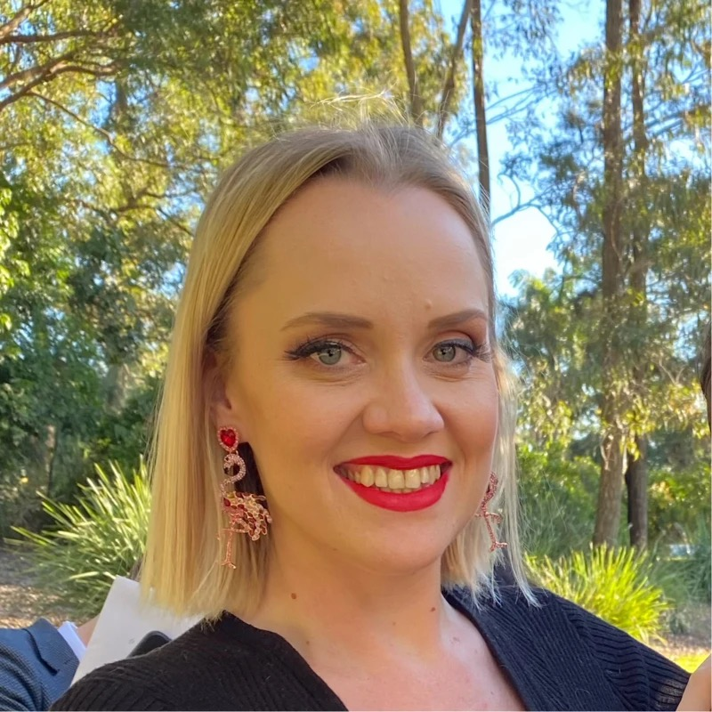

About Acacia Blue
Acacia Blue Accounting provides financial governance for community groups, campaigns, sitting members and third parties. It bridges financial management, tax-ready books and electoral funding and disclosure requirements with on-the-ground operations, coordinating with qualified legal and tax advisers on formal positions, so the people doing the work can spend their time on it.
The people behind the work
Director · Fractional CFO · FCPA · MAICD
Acacia Blue is led by Nicole Berkhout FCPA MAICD, a fractional CFO who has spent a number of years as a senior finance leader in the not-for-profit, community and corporate space. As the CFO of a Brisbane medical research not-for-profit, and finance lead at a Brisbane based Brain Injury Organisation, her finance skills have enabled organisations to navigate the challenges of managing diverse income streams and complex regulatory reporting requirements. She's a Fellow of CPA Australia, with a career built on turning complicated financial detail into decisions boards and leaders can actually act on.
Her interest in this particular corner of compliance work started with a campaign, not a client brief: volunteering on Ellie Smith's independent campaign for Dickson gave Nicole a first-hand look at how much financial and administrative pressure sits behind every grassroots campaign, and it's what pulled her toward supporting the community independents movement more broadly.
That combination, deep not-for-profit finance experience and a genuine appreciation for what it takes to run a campaign or a cause, is what Acacia Blue is built on: the same rigour she'd bring to any CFO role, applied to the community groups, campaigns and offices that don't have one of their own.
Connect with Nicole on LinkedIn →Operations & product
Chief Executive Officer
Emily has spent more than 20 years in banking, technology and financial services. She started at ANZ, working on the Transactive corporate banking platform across Australia, New Zealand and Asia, including ANZ's mobile corporate banking app, a first among the major Australian banks.
She went on to lead technology consultancies through growth and acquisition. As General Manager of Vibrato she grew the business from 10 to 50 consultants before its merger into Servian, where she then held sales and operations accountability for the Victorian region and helped bring the business into its new parent group. She later served as Chief Product Officer of a cloud software company, leading a team of 15 through its integration into a listed US company and delivering SOC 2 compliance for the platform.
At Acacia Blue she leads the business and the systems behind it: the operations, automation and Knowledge Hub that help campaigns and community organisations manage their finances without having to build that capability from scratch.
Connect with Emily on LinkedIn →
Finance & administration
Community Engagement – Finance Officer
Chloe has spent almost 20 years working across finance administration in the corporate, not-for-profit and small business space. Her career has taken her from sole traders just starting out to some of the largest mining companies in the world, working across industries including sustainable energy, mining, rail, recruitment, medical research and not-for-profit.
Her finance experience spans far beyond traditional bookkeeping. Chloe has served as a superannuation subject matter expert, managed complex government reporting requirements, supported payroll for a transient workforce of more than 18,000 employees, and worked with senior executives to ensure more than $20 million in invoicing was submitted on time. She has built financial and payroll systems from the ground up, most recently implementing a new payroll system for a 52-employee workforce working across multiple awards.
But Chloe's connection to community goes back much further than her professional career. She grew up in Girl Guides, joining at six years old, and has continued to be involved in community organisations throughout her life. She has been affiliated with community theatre groups, performed in Fringe festivals across Australia, and volunteered her time to support a range of social causes. Those experiences have given Chloe an appreciation for the people behind the organisations, businesses and causes she works with. She understands that good financial administration isn't just about getting the numbers right: it's about creating the structure and confidence that allows people to focus on the work that actually matters to them.
Connect with Chloe on LinkedIn →Four groups with different obligations, supported in the way that suits each.
The team is based across Melbourne and Brisbane, and the service covers federal and state jurisdictions.
Four things that shape every piece of work.
We say what needs to be said, without hedging or dressing it up. When a lodgment is due, we say so plainly.
Our team has stood where our clients stand, on campaigns and inside community organisations, and we bring that firsthand understanding to every engagement.
Legislation and compliance requirements shift constantly. We invest the time to stay across those changes, so you're not chasing them alone.
We measure our own contribution against the causes this movement cares about most, climate action, political integrity and gender equity, not just against a compliance checklist.
A short conversation helps us both work out whether Acacia Blue is the right support for you, and whether your work is right for us.